★
Home, before and after
SeenLook forNo tab row, no card; goal behind him, cards beside him, mini league and next match on top.
Home and every screen now look like an app, National League North and South are playable, and a new career starts with a scout and a pointer tutorial. Each change has a before and after clip of the real game on a phone-sized screen, or a picture where a clip would show nothing. The shop is 186 Blender pictures, and Settings has an Old UI / New UI switch. Nothing is live.
About the “Before” clips. Before is today’s Harry game. Where a feature did not exist yet (the pointer tutorial, the ? button, the gate drill, the scout card, the App Store, the Star Pass strip) the before clip just shows today’s game without it. There was no older version of those, so there is nothing to compare; the note under each clip says “brand new” or what was there instead.
“On the phone it looks so much worse.” And of the floating cards: “Even here, why are these pills floating? That’s so AI.”P74, P87, P100
Every screen had its own header, thin rounded bars, dark cards that floated on the page, and a different font. Energy and the star rating were rows inside a card, so Home was tall and the top of the phone was empty.
The Home from your screenshot: you stand bottom-left in front of the goal, stat cards to his right, a mini league table and the next match on top. One top bar and the star/energy strip on every screen, small arrows at the bottom, one heavy font, square bars, a lighter green. Nothing scrolls on three phone sizes.
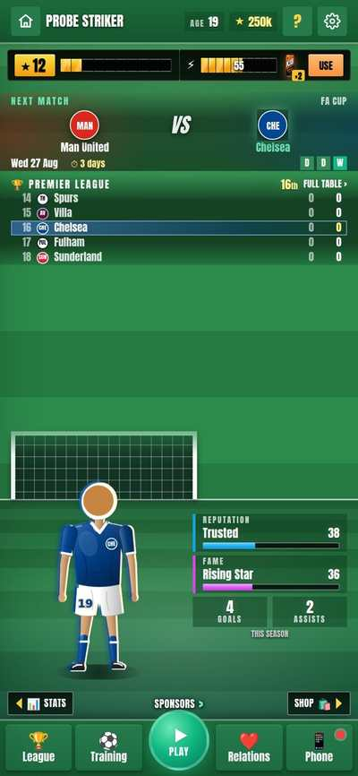
After: the shipped Home, then a swipe to Stats and back. Drag him to turn, tap for a celebration.
Look forThe layout in your screenshot, the strip on top, no card around him, and the page does not move.
What this means for youEvery screen sits under the same top strip, so it reads like an app. The Home details are in the list below; Screens and League use the same strip.
One line per change, with where to see it. Tick as you go (kept on this device only).
Home and the new look
Trial
Non-League North and South
Screens
Tutorial, help and after-match
Shop pictures in Blender
League page, title screen and pitch look
Game rules details
Old UI / New UI
Same save, same taps. Pictures at two phone sizes; the clip is at the top of the page.
Look forNo tab row, no card; goal behind him, cards beside him, mini league and next match on top.
The pitch greens were dark, so panels and white text felt heavy.
Grass #22763f / #1b6232 → #2c8a4b / #257a41; panels, top bar and nav one step lighter; page darkening 42% → 18%. One change in the shared variables, so every screen follows.
Stats
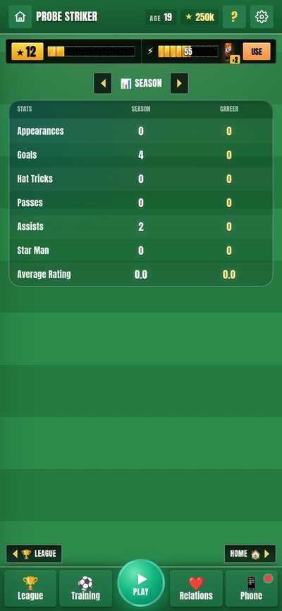
Shop
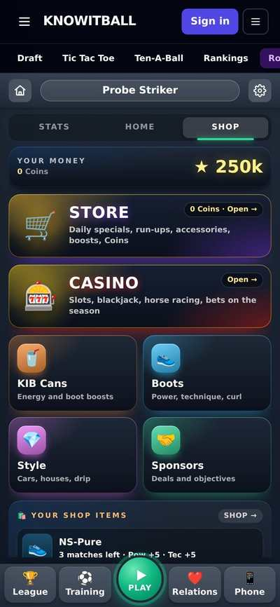
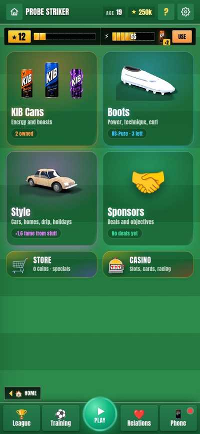
League
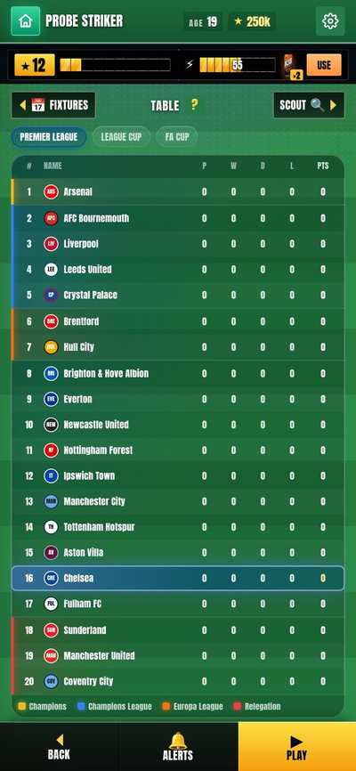
Training
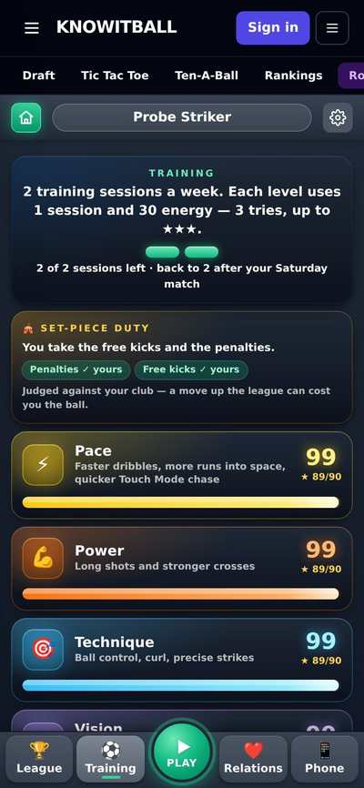
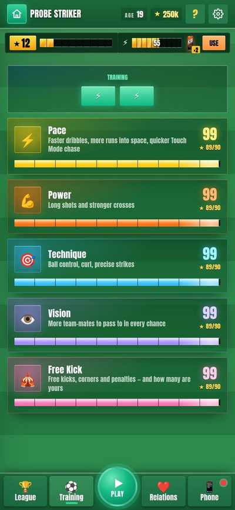
Relations
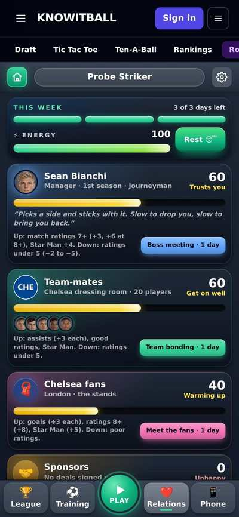
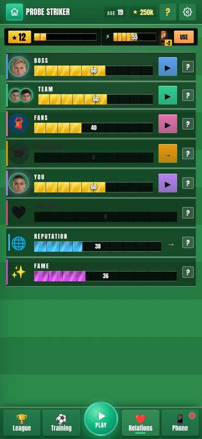
What changed on Home
The opening trial after “New career”: five drills, one attempt each, ending on a rigged shootout and a scout. Before is today’s Harry game, so some “before” clips show a drill that did not exist there.
“In the drills and the training, just take elements of what I just showed you. I think let’s remove the guy. On penalties, I like our guy being there, and maybe free kick … But maybe outside of that we just don’t have him.”P30
The run, gate and find-the-pass drills drew your figure although they only test the ball.
Figure of you: gate, run and find-the-pass 3 drills → 0; free kicks and shootout keep it
Look forOnly the set-piece drills draw you.
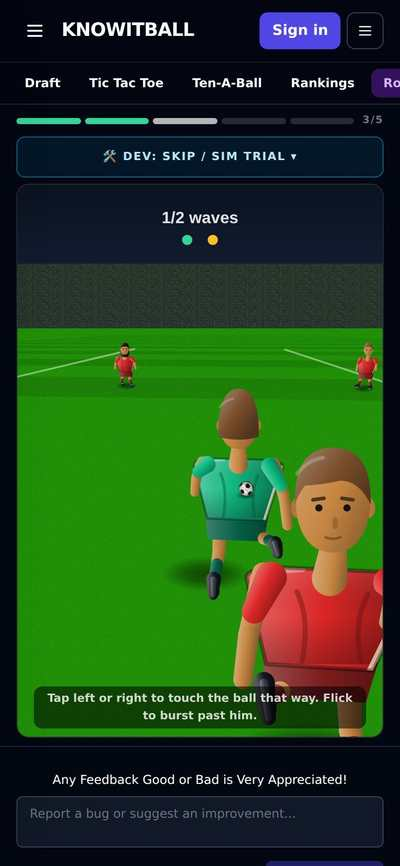
Before: Take him on shows the figure of you from behind (and in the free kick).
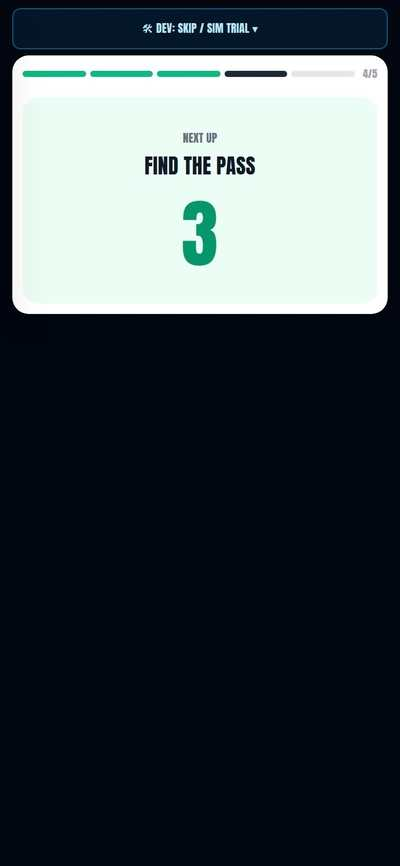
After: the run shows a ball and the men only; the free kick still draws you. One attempt, so the clip ends quickly.
New draw-only switches, off by default: scene.you (pitch drills, CanvasMatch) and hideYou (the first-person run). Find the Pass shows the ring and the ball, no figure. The ball, drag and strike are untouched.
“the pitch doesn’t need to have the box in it at all times.”P31
The technique drill drew the penalty box, six-yard box and spot although it is cones and a ball.
Box lines drawn: 4 shapes → 0 in the gate drill
Look forGate drill is cones and a ball on plain grass.
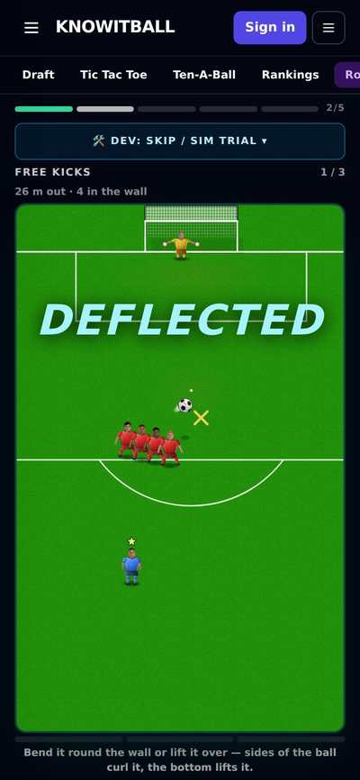
No gate drill exists on Harry today. Filmed where it would sit: the free-kick drill, with box and D lines all drawn.
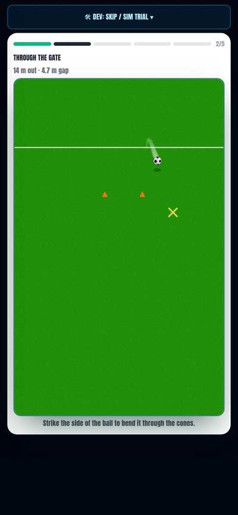
After: two cones, the ball and the goal line only; no box, six-yard box, spot or D.
scene.box=false leaves the penalty box, six-yard box, spot, D and the worn patches off; free kicks and penalties still draw them.
“I like Find the Pass as well, to be honest, so I think Find the Pass could stay as a fifth drill.”P32
The v0.20 test copy had cut it to four stages. Today’s Harry game still has it, so on this page it is a change from v0.20, not from today.
Stages 4 → 5
Look forFree kicks, gate, run, find the pass, shootout.
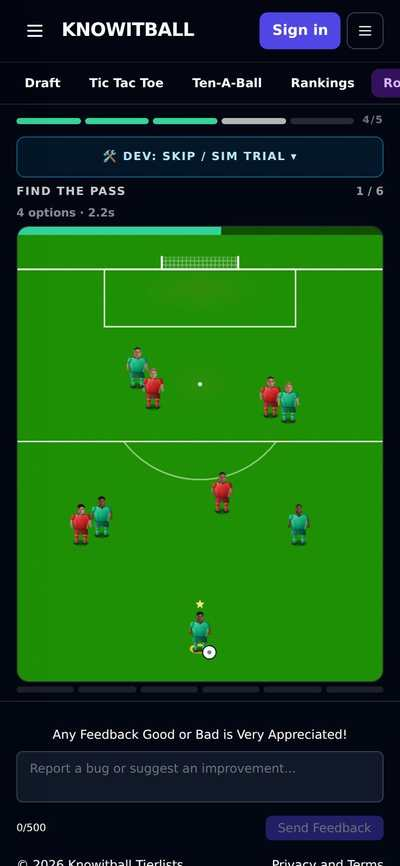
Harry already has Find the Pass (4th of 5, counter 1/6, 4 options). So 'back' is not a change on Harry; the change is one go and the light card.
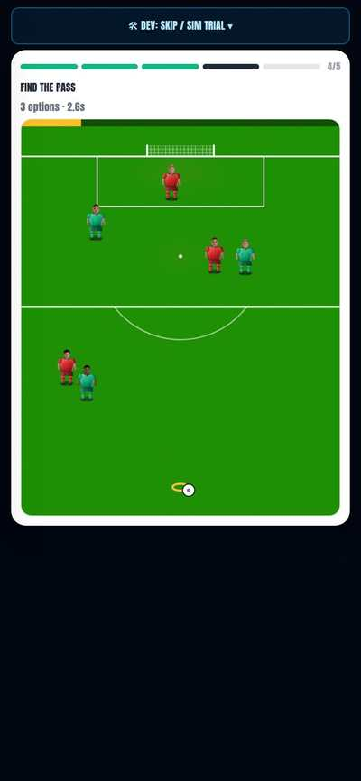
After: 4th of 5 again, one go, 3 options, no counter, white card.
TRIAL_STAGES has vision again, before the shootout. Old finished 5-stage saves still read; its three 'looking up' bad-luck events can roll again.
“maybe the other ones are all one attempt, it’s just a tutorial on how to play the game.”P33
Each drill gave three tries (find the pass six), so the tutorial dragged.
Attempts: free kick 3 → 1, gate 3 → 1, find the pass 6 → 1, run 3 waves max 4 → 2 waves (3 men on a median day)
Look forNo counters, no pip rows on the drills.

Before: free kicks 1/3 -> 3/3 (penalties 3 kicks too, run 3 lives, find the pass 6 goes). Clip shows two kicks.
REPS set to 1 on every drill; counter and pips hide when there is one attempt; the run is two waves (three on a hard day, up to 7 men, was up to 10).
“a full pen shootout where it rigs the game so it always has you having to score the winning pen.” And: “Trialist versus Academy … do up to three on the shootout, that’d be better.”P33, P37
Today’s trial ends with penalties and a five-a-side match, with no moment where you win it.
Kicks 5+sudden death → 3 each; their kicks rigged: 0 of 600 rigged misses went in, 599 of 600 rigged goals did
Look forAcademy only score when you are ahead, so your 3rd kick is the winning penalty.
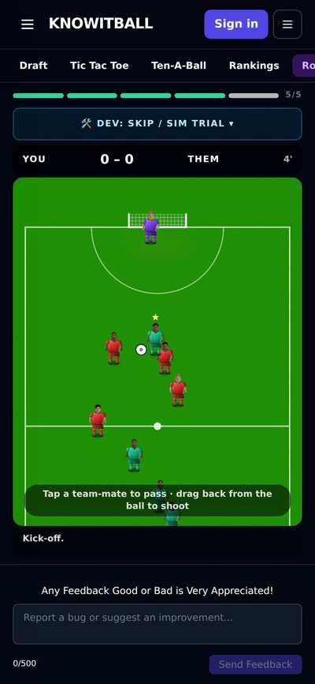
Harry has no shootout: the last drill is Five-a-side (a whole mini-match, the bot could not finish it). Filmed where the shootout sits.
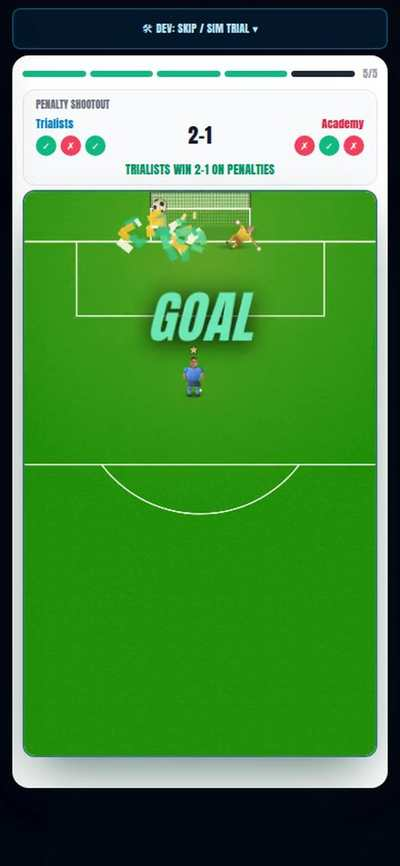
After: last 18 s at normal speed: your third kick scores and 'Trialists win 2-1 on penalties', then the scout card. The bot needed a couple of tries to score that last kick; a miss ends level and the scout still comes.
Academy go first; they score only when you lead, otherwise they miss, so it is level before your last kick. Their goal/miss is a planned penalty on the real engine (measured at keeper strength 45, 67 and 88). Both keepers still ramp each kick; bad-luck events kept. Their keeper guesses the wrong way on a rigged goal.
“you don’t get a trial rating, you just get scouted. That’s it, like a scout has spotted you.”P36
The trial ended on a score per stage and either a club offer or a No contract card.
Score screen + bars + No contract card → one line
Look forThe trial ends on a white scout card.
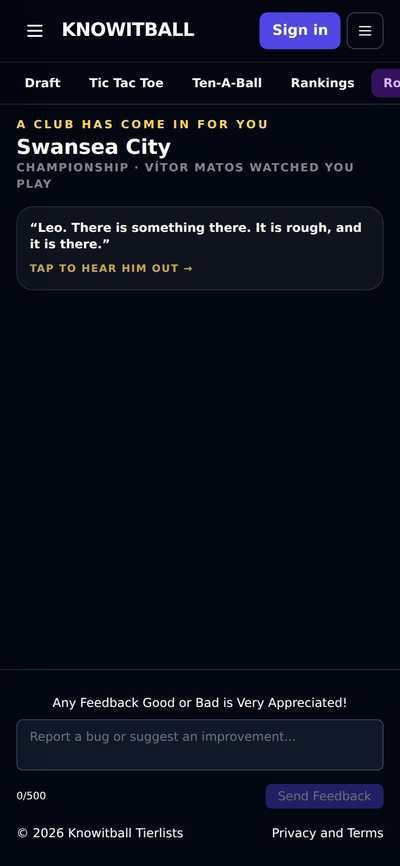
Before (dev-skip to the end): a dark 'Take him on 58 out of 100' card per stage, then 'A club has come in for you: Swansea City (Championship)' depending on score.

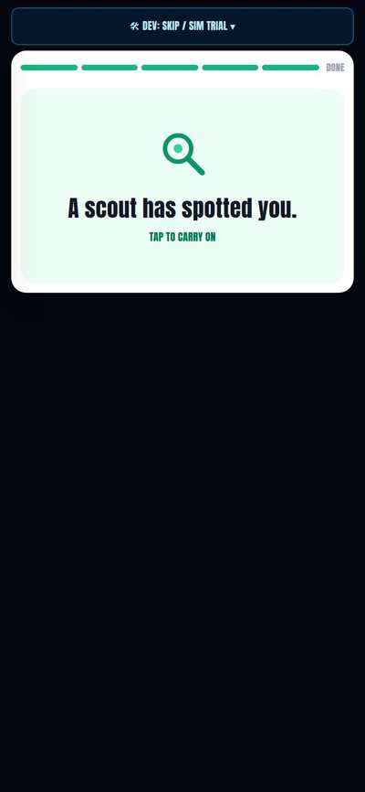
After (dev-skip to the end): white 'A scout has spotted you', tap, then the club (Boreham Wood, National League) in the same scouting screen.
trial.finalPenScored is set when the shootout ends (W1's scouted placement reads it). The scouting screen no longer shows 'Your trial N' or the stage bars; the no-offer card (second looks only) says 'Not this time'. The scout wording replaces 'the manager watched you play'.
“I don’t really like the dark UI. I like the pitch and the white and the basic. The animations and the feel of it are good.”P34
The trial cards were dark navy with rounded corners.
Dark cards 6 → 0 (countdown, teach card, event banner, shootout score, find-the-pass overlay, pips)
Look forWhite cards, same animation.
The trial sits on one white card; countdown number is green, step 0.7 s -> 0.55 s. The page around it stays dark until the Home work lands.
“This is too long, isn’t it? … the pen shootout should be quite quick.”P35
Find the pass alone took 56 s, then a five-a-side match followed.
Bot, start to the scout card: 163 s or more (and Five-a-side unfinished) on Harry today → 75.8 s
Look forAbout half or less.
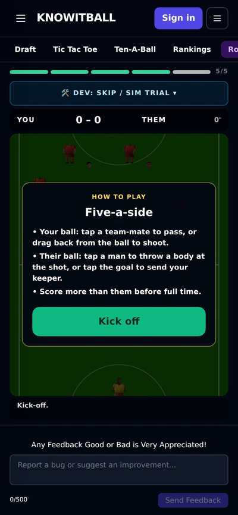
Before at 4x (40.8 s of clip = 163 s real, with ~246 s of bot stall cut out): penalties 36 s, free kicks ~32 s, run ~9 s, find the pass 56 s; then five-a-side began and the bot never finished it (25 s of it shown). So 163 s is the least; the real time is longer.
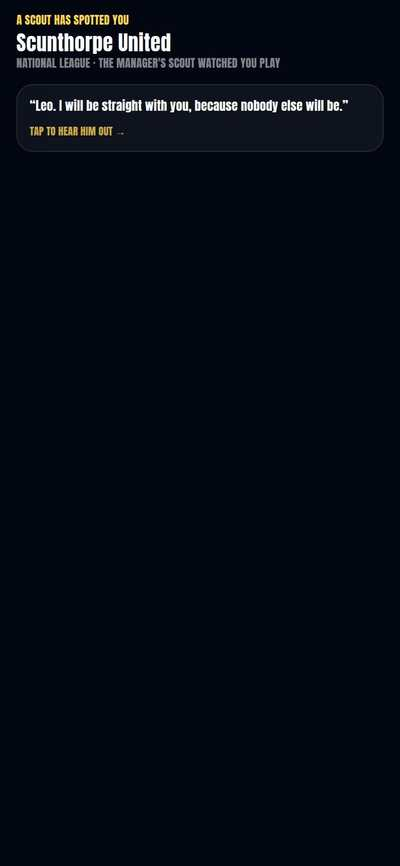
After at 4x (19.2 s of clip = 75.8 s real): free kicks 7 s, gate 4.5, run 4, find the pass 9, shootout 43, scout card.
Measured on the final merged copy against Harry today, same bot. After: free kicks 7 s, gate 4.5, run 4, find the pass 9, shootout 43. Before: penalties 36, free kicks 32, run 9, find the pass 56, then a Five-a-side match the bot could not finish (not counted). Earlier 160-190 s figure was against the older test base.
A switch in Settings, so the old game is always one tap away.
Settings “Look: Classic | Pitch” → “UI: Old | New”. Old = today’s game exactly: 11 screens (home, stats, shop, league, training, settings, pre-match, relations, phone, team sheets, title) 0.00% of pixels different from branch Harry at 390×844 (53% before the fixes). New = v0.23. New players get New; saves carry across both ways.
Look forSettings → UI: tap Old and you are back in today’s game; the Old Settings has the same switch.
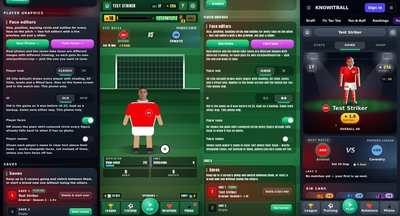
72 screens are frozen in components/star/legacy: the old page plus every screen v0.23 changed. They play the real match, drills and trial, and every rule in lib/star. Only difference: the star-rating sheet’s point counts (rules changed). Old UI shows the new rating ÷10 as before (a new Arsenal career: ★ 1.0). A National League North career opens in the Old UI with no errors.
Your “final decision”: both are playable divisions with real clubs. Pictures, not a clip: a season is too long to film.
“we need to add the non-league clubs. So non-league south and north need to become playable. That’s a final decision from me.”P62
The game’s bottom division was the National League, with a four-club pool under it and nothing playable below.
Playable divisions: 5 → 7. Bottom: National League → North and South (24 clubs each, 46 games)
Look forA season in National League North, real clubs
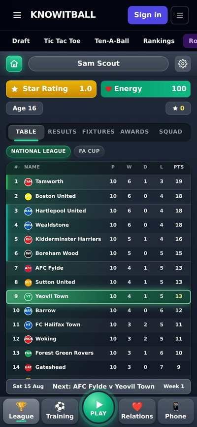
Before (Harry, seeded save 10 games in): the bottom table is just 'National League'.
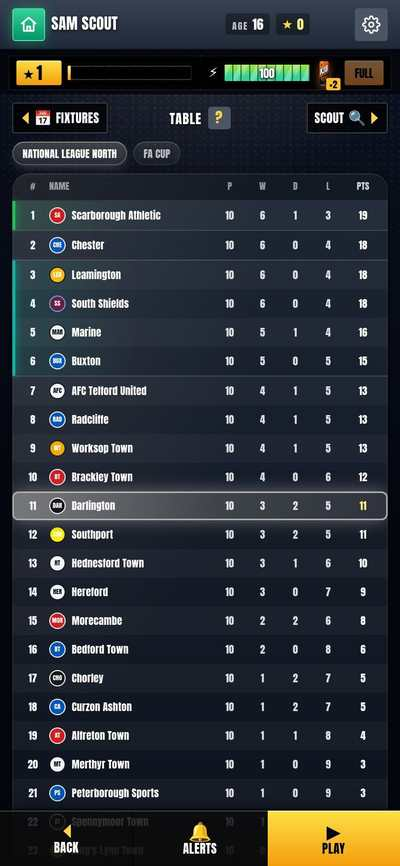
After: a Darlington career in National League North (seeded save, 10 games of points); the National League table is shown too. Stills only (table, no motion).
Real club names: each region's real 2025/26 members, moved on by the same moves the game's own National League list already assumes (AFC Fylde, Kidderminster, Hornchurch, Worthing up; Brackley, Morecambe, Braintree, Truro down). The old four-club 'pool' under the National League is gone; its four clubs are in North/South. Up and down: 2 up from each region (champion + play-off winner, 2nd-5th); 4 down from the National League, split two and two by where the ground is (the two northernmost go North). Nobody goes down out of North/South: nothing sits below them. Kits: home colours as each club's real colours, away kits picked to contrast. Short names for all 48. Squads: generated, average 52 (National League 55). Wages: same band as the National League (the wage floor). Star points x1, fame level 10, energy cost 26/36. Relegation from the National League no longer forces a move to a new club; you just play in North or South next season. 20 seasons played from each region: sizes stay 20/24/24/24/24/24/24, nobody doubled up, your club came up at least once.
Eleven changes from the rest of his walk-through.
“Stats, home, shop, season, all seasons, records … that is very bloated.” And: “it could just be a little arrow here with an image, arrow here, image, the little word.”P46, P47, P96
Three stacked tab rows took 126 px, about a fifth of the screen.
Three tab rows (126px) → one arrow row (30px); first table row 501px → 173px down (the 501 includes the site menu)
Look forOne thin row: League left, Home right, ‹ Season › in the middle
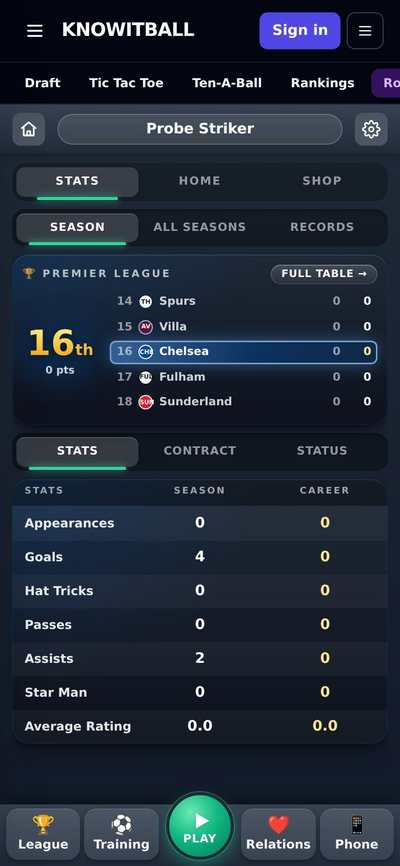
First table row 501 px down (measured, with the site menu on top).
Season, Contract, Status, All seasons and Records are one cycle you step through with ‹ ›. The League arrow opens the League screen; the Home arrow returns to Home. The Home/Shop tab row on the other two pages is now an arrow row too (Stats ◄ Home ► Shop). The Premier League mini-table is removed from Stats.
“that first 40% of the screen here is just that, and then the rest of it is actually the game.” And: “The style doesn’t need to be there and back doesn’t need to be there.” And: “That should always be at the bottom.”P39, P40, P41, P97
A title, a Back button, five group tabs and a My stuff strip sat above the first item.
First item 294px → 129px down (390x844; the 294 includes the site menu)
Look forNo title, Back or My stuff; fame bar on top, Back / ‹ DRIP › / Home along the bottom

Before: Lifestyle with Item / Vehicle / Property tabs and a note; first item at 294 px.
The bottom bar replaces the Back button and the five group tabs; the top strip is the energy HUD. My stuff (the strip and its page) is gone, ready for the 3D home. The group note line is gone (Holiday keeps one short line). Buying still works from the item sheet.
“We don’t want any of this text on the relations page. None. None.”P85, P86, P87, P90
Five cards each carried sentences, so only three fitted on screen.
Scrolls (192px extra, Fame row off screen at 1022px) → no scroll, Fame row at 506px, 8 one-line rows
Look forFace, one word, a square animated bar with the number, play button, ?
Before: scrolls (page height 192 px more than the screen); the Fame row is at 1022 px, off screen.
Every sentence is gone. The ? opens one line per relationship (team: 'a good relationship with the team means you'll get more chances during a match'). Sponsors (no deals) and a Partner slot (single) are blacked out. Reputation and Fame use the same row.
“Instead of the close phone button being there, could we have that be more creative? More like an actual phone, potentially?”P88
A ✕ CLOSE PHONE pill is a website button, not a phone one.
'✕ CLOSE PHONE' pill → the phone's home bar
Look forThin white bar at the bottom of the phone; tap or swipe up
On the grid it puts the phone down; inside an app it goes back to the grid. I chose a home bar (tap or swipe up) because it is what a real phone has. The decorative bar the frame already drew is now this working one.
“The red dot should only go when you actually have no notifications, or you’ve read them.” (his wording as typed; he means: gone once read)P89
There was no dot at all, so you could not tell something was waiting.
No dot at all → dot while unread (4 on this save), gone after reading
Look forRed dot on Phone until you open what is new
One rule for the dot and the app badges: unread messages, new posts since you last opened Social, sponsor offers waiting. Reading clears it straight away. New test tests/star/phoneUnread.mts.
“This page now is super empty … you see how the girlfriend and sponsors are just blacked out? You don’t have any at the moment.”P90
Empty pages showed a blank card or a sentence, and apps you did not own were hidden.
Missing apps hidden → 7 blacked-out shapes; empty Social text card → blacked-out posts
Look forDark ??? icons for apps you have not got; empty pages show dark placeholder rows
Filmed on a brand-new career (Harry Vale). Today's game lists every app already on that save, so the before shows the full grid and a plain 'Quiet out there' card.
Tap a blacked-out app to open the App Store. Empty Social, Fixtures and Messages show blacked-out rows with an icon, no sentence.
“maybe if they’re low on energy, as they go to press play, we prompt them … maybe like a pre-match animation where it shows the line-up, and then you just click and you’re in the game.”P91, P93
The match-day page was “information overload” and cost three taps before a kick.
Play → Team sheets → Kick Off (3 taps, an info page) → Play, then in the match (1 tap)
Look forPress Play, the line-up draws in with a timer, you are in the match
Before: Play opens a match-day page (Fixtures, Match, Scout, cans, position picker), then Team sheets, then Kick Off: 3 taps.
The match-day page (Fixtures, Match and Scout pages, energy and sharpness bars, cans, position picker) is not used any more. A prompt only appears if energy is under the starting line (65): Use a can / Play anyway / Back. A player not in the squad gets one card with Watch from the stands. Sim is a small button on the line-up. The team sheet is the animation itself, not a pop-up over the match (see questions).
“this is the pitch screen — that should definitely be more pitch related. Definitely.”P94
The first seconds of a match showed an empty black panel with a sentence.
Black panel + sentence → striped pitch with centre circle and the two names
Look forThe opening card is a pitch
Screen chrome only (MatchCommentary.tsx); canvasEngine.ts untouched.
“Instead of red, yellow, green I would do green, yellow, red — red being the most intense.”P95
The energy buttons ran Low red, Medium yellow, High green.
Low red / Medium yellow / High green → Low green / Medium yellow / High red
Look forBolts run green, yellow, red; red is the most intense
Same order left to right (Low, Medium, High); only the colours swapped, plus the selected ring.
“I don’t think the penalty run-up and three-kick run-up should be in your settings. It should probably be in like a style, like a play style section.”P84
Run-ups sat inside the You section of Settings.
Run-ups card in the You section → its own Play style section
Look forSettings has a Play style heading holding the run-ups
The 3D/2D option stays in Settings.
“the pills at the top change based on what screen you’re in, so that’s kind of like your HUD … your energy never leaves.”P86
The shop pages, Store, Casino and Settings replaced the dashboard and had no top strip.
No energy on 5 screens → energy and money strip on all of them
Look forMoney and energy (with USE / BUY) stuck to the top of every shop page, Store, Casino, Settings
Casino shows energy only (it has its own bank). Money counts down in the HUD when you buy; items fly into the HUD money or the fame bar.
The pointer tutorial, the ? button, the after-match order, news, the phone and the Star Pass.
“instead of saying ‘this is home’ as a pop-up, just pop it up how it does here … it’s like an ordered thing.” And: “we just pop up like ‘Home’, ‘your player’ … And then we say ‘go to training’, and then they have to press ‘go to training’.”P7, P9, P10, P66, P67, P68, P104
The welcome was four text cards that said what each screen was.
4 'This is…' cards → 5 pointers (Home, your player, star rating, energy, Go to training) on the real screen; you press Go to training.
Look forA hand points at each real thing in order
A new PointerTour finds real buttons by name, dims the rest and points at them. 'Go to training' only moves on when you press the real button. Skip is in the bubble. New careers only.
“to earn coins, go ahead and play your first game. So the tutorial doesn’t drag on, drag on, drag on.”P68, P69, P70, P104
After the two drills there were three more cards before you could play.
'Training done' + 'The League' + 'The Shop' cards → 3 short pointers: League unlocked, Your league, To earn coins play your first game.
Look forLeague pointer, then a hand on Play
The locks are unchanged (two drills open League and Play). The Shop now opens after the FIRST GAME (was: opening the League), so a pointer sends you to Shop then Style after that game. Extra pictures: the Shop is a tab on Home from the first second on today's game; after the change it is a pointer, 'The Shop is open', after your first game.
“Help. See that? That’s how we do tutorials: you pop them up as they’re in something. We don’t necessarily force it.”P42
Once a tutorial card was gone you could not see it again.
No help → a ? in the header on Home, Stats, Shop, Training, Relations and League that replays that screen's pointers.
Look forSmall ? next to settings opens the pointers
Never forced; works on old and new careers. The phone has no header, so no ? there (reasoned).
“you see the star rating goes up, but it doesn’t say plus 100 points. Then your match stats, your match rating, and what does that do for your relationships? Your wage and your bonus and your cash.”P5, P27
The after-match screens showed star-point sentences and put pay before relationships.
Order was score, rating, pay, relationships, star bar with '+N Star Points' lines → now star bar rises (no text), rating, relationships, pay, achievements one at a time.
Look forBar fills, then rating, relations, pay, achievements
Before: match rating -0.1 -> 6.6, 'Star Rating 1.1 -> 1.3', '+23 Star Points - Up a notch!' text, Continue open at once.
Continue is greyed until every achievement has been seen (checked: disabled while they show, enabled after). A level up fills the bar, ticks the number and restarts the bar. The 'star up' banner on Home after a match is gone (the bar already showed it).
“we can have that breaking news article of ‘youngster signs for Brentford’ or whatever, and he’s looking to take charge of the league.”P28, P50
Big moments (a signing, a first goal, a trophy) passed with no news.
No news after a first goal → a full-screen page with headline, ticker, face and crest
Look forRed strip, headline, one line, OK
Seen for the first goal. Signing and trophy use the same pop-up and are wired but I did not film them (the signing is mid-trial and the trophy needs a cup final).
“I don’t know about PK, FK. I just don’t think it needs to be said. I think at one point your manager will come up to you, have a conversation with you and say ‘I’m making you …’”P4, P78
Penalty and free-kick duty was shown as lines on the Match tab and a Training card.
Penalty and free-kick lines (Match tab, Training card) → one 3-line chat from the manager, once.
Look forManager bubble: 'I'm making you our penalty taker'
Before: 'Set-piece duty' card and 'Penalties: Schade' note sit on the Training and Match screens.
Comes after your first match; if both duties are new it is one chat for both. Uses the real manager's name.
“the phone should be there as the first style unlock. It’s the first thing you have to buy, and it’s like 800, and it’s just like an iPhone. Don’t call it iPhone, but everyone will know what that is. Then maybe it does last two seasons and then you need a new one.” And: “the phone should just like flash, and it should give a little pop-up of what the phone actually is.”P70, P71, P102, P103
The phone had five levels from ★30 and nothing marked it as the first thing to buy.
5 levels, ★30 (Harry today) → one phone, ★150, lasts 2 seasons, broken phone locks the Phone button until replaced
Look forOne iPhone-style phone, flashing, one-line pop-up
Drawn with no name or logo. The phone tile flashes in Style (Gadgets) and a pointer says what it is. Buying it is a full-screen moment with confetti. Apps in the App Store now cost ★1,000 to ★15,000.
“Then maybe it does last two seasons and then you need a new one.”P103
A phone that lasts forever makes the purchase a one-off.
Phone never wears out → after two seasons the Phone button locks until you repair it in Style (★150)
Look forPhone button shows a lock; tapping says repair it in Style.
The phone lasts two seasons. When it breaks the Phone button on Home stays locked until you repair it in Style (Gadgets). The repair costs the same as a new phone, ★150.
Not his words: the phone had no apps to buy.P90
A phone with nothing to spend coins on is just a screen.
No App Store → 7 apps priced ★1k to ★15k
Look forAwards cheapest, Owner dearest.
Apps are shortcuts you buy with coins from the phone's App Store.
“maybe make this minus four instead on the boss meeting.” And: “minus eight is too much when you fail here.”P69, P98
A lost boss meeting cost 8 points of relationship.
Harry today: a lost meeting gives +4 (50 → 54). New: a loss costs 4 (50 → 46)
Look forResult card says -4
Before: 'Ran out of tries - still got a small +4 boost for trying'; the boss bar went 50 -> 54 (read from the save).
Seen on a lost game from 50.
“‘Your career so far, out of 100. It never goes down.’ Not needed.” And: “never mention 1 to 100.” And: “we’re never going to say to the user the Star Pass coming next will be built on it.”P10, P12, P13, P15
The star popup explained itself with a gold box of rules that were also no longer true.
Gold 'What it's for' box (1 to 100, never goes down, Star Pass coming next) and the ×multiplier sentence removed; popup is now the Star Pass.
Look forStar Pass: bar and breakdown only
Locked (the rating does nothing when tapped) until the tutorial is done. The ★ milestone line 'Your career so far, out of 100. It never goes down.' is removed too (not filmed, one line).
“it should be like a scrolling kind of calendar looking thing where they can scroll left and it will take them across level one, level two, level three … what that unlocks for them.”P11
The gate popup was a red box with one sentence and a list.
Red ★29-gate box + list → swipeable ★1-★100 strip, centred on you
Look forSwipe levels; pictures of what each unlocks; padlock where a gate holds you.
The old box: a red gate sentence, points list, task list, Close. Filmed on a save at star level 29.
Each level is a square card showing the shop items that open at that star rating (from the same table the Style shop uses: ★4, 6, 8, 10, 15, 30). Your level is lit with its progress bar; levels you haven't reached are dimmed; a padlock card sits where each of the 7 gates is (red = closed, green = open). Tap a card for its item names; tap the padlock for the one-line gate need; ★91-100 show the ten Legend tasks. Star Points rows kept underneath. Back is on the bottom bar.
“‘session 30 energy, 3 tries, up to’ — stop it. Stop this everywhere.”P51, P78
A sentence of numbers and a Set-piece duty card sat on the Training screen.
'A session: 30 energy · 3 tries · up to ★★★' and the Set-piece duty card removed.
Look forTraining screen without the sentence and card
'No more sessions this week' stays (it is a state).
“Penalties, Palmer, this doesn’t need to be there, it doesn’t need to be said.”P4
The Match tab ended with a line about who takes penalties and their score.
'Penalties: Schade … penalty score 56' removed from the Match tab.
Look forMatch tab ends at Sharpness
The PenaltyDutyLine component is deleted.
Every shop picture is now a render. Four changes with before and after clips, and a strip of six families below.
“just look at the illustrations. They’re not very good, are they?” And: “Do them all like this … Don’t do an in-between.”P43, P57
A half-redone shop would have shown drawings and renders side by side.
All 186 shop pictures are Blender renders: every Style item at five levels, plus all seven boots at five levels. Six of them below, level 1 to 5 left to right.
Look forEach row gets richer from level 1 to level 5, and all rows look like one set.
Weakest pictures, still in: the gold suit, the necklaces and chains, the horses, and the phone and tablet screens. Questions about these are in Your calls.
“just look at the illustrations. They’re not very good, are they?” And on seeing the renders: “Oh, rendered. Oh damn, you have done it. That’s so much better.” And: “Do them all like this … Don’t do an in-between.”P43, P56, P57
The shop’s cars, jets, homes, watches and the rest were home-made flat drawings, and only some had been tried as renders.
Style shop pictures: 155 drawings → 151 renders (the phone is now one picture), shop grid, My stuff and sheets all show renders
Look forShop grid before drawings, after renders, all five tabs.
Before (Harry today): Shop > Style is a text list (Item / Vehicle / Property) with levels as buttons; no pictures. The older drawn-pictures version is only in the earlier v0.21 test copy, not on Harry.
31 families made 5-level ladders (cars, bikes, jets, homes, watches, jewellery, gadgets, suits, art). Each is modelled in code in the same studio as the boots. Each shipped picture is a 400×300 WebP (about 19 KB). If an image fails to load the old drawing shows instead. The phone is one ★800 picture, a plain slab with app tiles and no logo, as W5 asked.
“Do them all like this … Don’t do an in-between.”P56, P57
The item sheet showed one big drawing and five small drawn level thumbnails, so a half-done set would show both styles in one sheet.
Big picture and the 5 level thumbnails: 5 drawings → 5 renders; sparkles clear of badges
Look forSports Car sheet, L1 to L5, before and after.

Before: no sheet at all; tapping L1/L3/L5 only selects a price on the list (L3/L5 taps missed in this run).
The level-5 sparkles are not in the image: the game draws them over the render in the same top-middle and right-edge spots, so they never sit on the Level 5 of 5 or YOURS badge.
“Do them all like this … Don’t do an in-between.”P57
The boots had their own older drawings, separate from the rest of the shop.
7 boots × 5 levels: drawings → renders, same shelf and cards
Look forBoots shelf scrolled, before and after.
All 35 boot pictures were re-rendered with the same settings as the rest of the shop and without the baked-in sparkles.
“Let’s stop with the real faces, unless it’s your guy.”P49
The manager at the signing desk was a pasted real-photo face.
Real faces on the signing figures: 2 → 1 (only yours)
Look forSigning desk, manager's head before and after.

Before: Harry has no signing scene; accepting a club shows a 'Congratulations - Professional contract' card instead.
The manager was a pasted real-photo face labelled K. Andrews. It is now a drawn head (same drawing the in-match figures use as a fallback), the same man every time. Your own face is unchanged. Nowhere else pastes a real face on a 3D figure: the player avatar and match figures are yours or the squad's own photos, left alone.
Fixtures and league on one page, the bell, Play as, the title screen, and the pitch look in training and around the match.
“you’ve got your fixtures, so we could do this fixture page with the league, and you have a bell.” And: “the league stuff has to get removed from this page and be moved over to either another page or we just keep it in the league area.”P90, P96
Fixtures, results, table and scout were on separate pages and tab rows (about 60 px).
First club row 352px (with site menu) → 202px; two tab rows → one 30px arrow row; bells on other games: none → every game of the next 5 weeks
Look forOne arrow row flips Results, Fixtures, Table, Scout, Awards, Squad
The League screen is now a full page like the shop: top HUD (energy), a thin row of edge arrows, the page, and a bottom bar. Fixtures shows your next games, your results and the other games each week with a bell on each. Scout (the opposition's form, key man and report) is back from the old match-day page. Results, Awards and Squad are kept as further arrows. Opens on Table. The old Fixtures tab list is replaced by the new Fixtures view.
“a bell, like maybe in the middle somewhere, a bell to see if you want to get notifications.”P90
Live-score clubs could only be set deep in Settings.
Live-score clubs: only in Settings (scroll) → one tap on the bar
Look forBack, a bell, Play. The bell lists the clubs; a dot when any are ticked
The bell opens the same list as Settings → Live scores (one list, two doors), as a flat sheet of club crests: tap a club to get its goals during your match. The dot shows while any club or any single-game bell is on. No sentences.
Found while building, not his words: dropping the match-day page (P91) also dropped the place where you choose ST, CAM, LW or RW.P90, P91
The picker lived on the page that is gone.
Picker: nowhere in Play (0 taps) → 1 tap on the line-up; choices ST / CAM / LW / RW
Look forA small Play as chip above the line-up; picking redraws it
I put it on the line-up animation (the choice shows at once: your star moves). Opening it stops the auto kick-off so there is time to choose; after choosing you tap Kick Off. Only shown if you are in the team or the bench and the formation offers other positions. The choice stays on the save, as before.
“Help. See that? That’s how we do tutorials: you pop them up as they’re in something.”P42
The ? was on the other screens but not on the League page, which has its own layout.
No help button → ? beside the page name
Look forTap ? to replay the League pointer, same as the dashboard.
Same replay as the dashboard's ? (HELP_TOURS.league). Hidden during the first-visit pointer so two tours never stack. The League page returns early in page.tsx, so the tour is drawn there.
“this whole pitch with the football, the name of it, like the background’s like a net. Our guy should be standing like here, then, on the left.”P82
The title screen was the player in the middle under floodlights with three wide buttons.
Player centre under floodlights, three wide buttons → net behind, pitch, ball, you on the left, menu flush right
Look forNet, pitch, ball at your feet, you on the left, no store badges
A mesh of diamonds lit in your club colour with a crossbar and post, a mown pitch with chalk lines, a big ball at your feet, you standing on the left, the KNOWITBALL wordmark on top (Anton, shine kept), and the menu as slanted flat buttons down the right edge: Continue (green, with club and star), New game, Load game, Settings, small Credits.
“our guy should be standing like here, then, on the left” (title screen). Found while checking, not his words: at 360 px wide the arm was 15 px from the menu and the ball sat on Settings.P82
The player and ball were placed for a wider phone.
Player 2.5% further left, ball 10% left and 19% smaller; gap arm→menu 15→22px at 360
Look forMenu no longer near the player's arm; ball off the Settings button.
At 360x640, 375x667 and 390x844 the arm was close to the menu (15px at 360) and the ball sat on top of Settings. Also 'BRENTFORD · S1' was cut off at 360; now it fits. In my renders the arm was never actually covered, so if it still overlaps on Harry's phone it needs his screenshot.
“when it’s in the training or drills or match, we definitely use the pitch kind of UI. I think it’ll be a lot better.” And: “the training I think looks pretty good.”P92, P105, P107
Classic training was navy cards with big rounded corners.
Classic training: navy cards, 16px corners → grass, chalk, 2px corners (same as the Pitch look)
Look forTraining page, level list, how-it-works card and drills are green and square
A wrapper (PitchScope) puts the Pitch look's colours and Anton font on the training page, the level list, the how-it-works card and the drills, whichever look Settings has. Cards and bars lose their rounded corners inside it. The Relations page keeps the chosen look.
“when it’s in the training or drills or match, we definitely use the pitch kind of UI.” And: “this is the pitch screen — that should definitely be more pitch related.”P92, P94
The page around the match canvas was a navy gradient with rounded cards.
Classic match chrome: navy page → grass; corners 16px → 2px
Look forScoreboard, stat bar, energy bar and bolt buttons sit on grass, square
Same wrapper on the match screen: the page around the canvas, scoreboard, stat strip, energy bar and buttons. Nothing the canvas draws was touched (canvasEngine.ts and CanvasMatch.tsx are unchanged).
How you get into the game, and what a run of bad matches now costs.
“you don’t get a trial rating, you just get scouted. That’s it, like a scout has spotted you.” And: “If they score that final pen, maybe they have a better chance of being in the National League rather than the non-league south or north.”P36, P63
The trial score decided 0 to 5 offers, and 49/100 meant nobody came and you were a free agent.
Trial result: a score and 0-5 offers (49/100 here = no club) → always one club in National League / North / South
Look forSame trial: free agent before, Enfield Town after
lib/star/scoutedPlacement.ts: scoutedPlacement(finalPenScored, rng) picks the division (scored: 50% National League, 25% North, 25% South; missed: 20/40/40), then any club in it. Measured over 40,000 each: scored 50.1/24.8/25.1, missed 20.2/40.1/39.7. Seeded off the trial, so a reload lands at the same club. Wired into the career page's offersForTrial: the first trial now brings exactly that one offer into the existing manager talk and signing; a free agent's second trial still uses the old score ladder. The rebuilt trial (W2) should set trial.finalPenScored; until it does, scoring half or more of your shootout kicks counts as scoring the last one.
“I think you can be able to go down a little bit. If you’re having poor performances, eventually maybe you can even go down a whole level.”P14, P13
Star points only ever went up, so a bad player kept climbing.
5 poor matches in a row at level 8: 8 → 8 before, 8 → 7 after. 15 in a row: 8 → 9 before, 8 → 5 after
Look forNo screen change; measured
Poor match = rating under 5.5: it earns nothing and costs a fifth of your current level's points, so the bar falls at once. The level only drops after 5 poor matches in a row (a 6.5+ match breaks the run; 5.5-6.5 neither adds nor breaks it), one level at most per match, never below 1, never at 90+. Measured on 20 played careers per row: rising player (avg 7.3) 13 after 92 matches before and after, 0 of 20 ever dropped; struggling player (avg 5.7) 10 before -> 3 after, 19 of 20 dropped at least once; 5-match slump: all 20 lost exactly one level, on the 5th poor match, and won it back in a median 3 good matches; poor from match 1: level 4 after 20 matches before, 1 after. Also removed the now-false 'it never goes down' line from three places (UnlockChain tutorial, StarRatingSheet, the rating card on Home) and the '1 to 100' wording from StarRatingSheet.
36 questions, each already built on its default. Answer by number, one word is enough (“1 yes, 2 yes, 3 animation”). The first six matter most.
Only what is truly open.
Ball, pitch texture, camera, keeper and figures; and the 3D walk-around. Not in this build.
19 sounds are made. Listen on the Sound Board; they are not wired into the game.